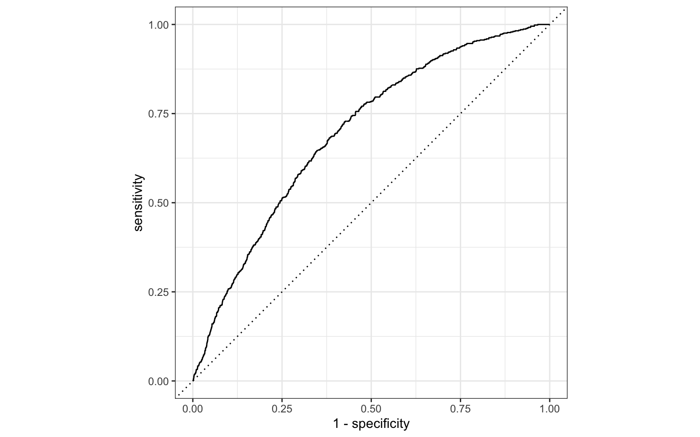
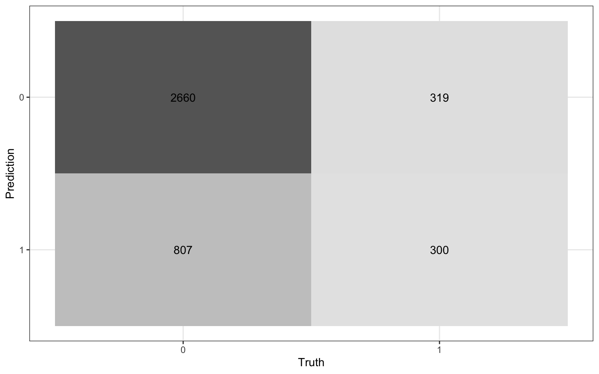

| Residence | Did not donate | Donated |
|---|---|---|
| Overseas | 101 | 14 |
| Rural Domestic | 88 | 45 |
| Urban Domestic | 82 | 24 |
Logistic Regression
Model selection + Inference
Prof. Maria Tackett
Nov 19, 2026
Announcements
Project presentations in lab Monday, November 23
Post PDF of slides or link to slides in
presentationfolder of the project repoStatistics experience due Tuesday, November 24
Project draft + peer review in lab Monday, November 30
- Bring 2 printed copies of the draft to lab
Exam 02
Scores (out of 40)
Mean: 31.74
Median: 32
Answer key on Canvas
Regrade requests through November 30.
Exam 02: 2a
Suppose there are two guinea pigs in the study that receive the same dose through the same supplement type.
Guinea Pig A: Has a large positive standardized residual based on the model from Question 1b
Guinea Pig B: Has a standardized residual close to zero based on the model from Question 1b
How does the leverage for these two guinea pigs compare? Briefly explain.
Exam 02: 5a
Suppose we fit a logistic regression model of the odds an individual made a recent donation using reside as the only predictor. What is the estimated coefficient for Rural Domestic? Use Overseas as the baseline.
Exam 02: 6
Suppose we have a linear regression model with the usual assumptions on \(\boldsymbol{\epsilon}\). We estimate the regression coefficients \(\boldsymbol{\beta}\) using maximum likelihood estimation and another estimation method. Assume both estimators are unbiased.
A colleague says, “Because the maximum likelihood estimator is more efficient, its estimate must be closer to the true coefficient for the data we collected.”
Is this statement correct? If so, explain why. Otherwise, explain why not.
Topics
Model selection using AIC and BIC
Inference for logistic regression
Model selection
Computational setup
Risk of coronary heart disease
This data set is from an ongoing cardiovascular study on residents of the town of Framingham, Massachusetts. We want to examine the relationship between various health characteristics and the risk of having heart disease.
high_risk:- 1: High risk of having heart disease in next 10 years
- 0: Not high risk of having heart disease in next 10 years
age: Age at exam time (in years)totChol: Total cholesterol (in mg/dL)currentSmoker: 0 = nonsmoker, 1 = smokereducation: 1 = Some High School, 2 = High School or GED, 3 = Some College or Vocational School, 4 = College
Modeling risk of coronary heart disease
Using age, totChol, and currentSmoker
| term | estimate | std.error | statistic | p.value | conf.low | conf.high |
|---|---|---|---|---|---|---|
| (Intercept) | -6.673 | 0.378 | -17.647 | 0.000 | -7.423 | -5.940 |
| age | 0.082 | 0.006 | 14.344 | 0.000 | 0.071 | 0.094 |
| totChol | 0.002 | 0.001 | 1.940 | 0.052 | 0.000 | 0.004 |
| currentSmoker1 | 0.443 | 0.094 | 4.733 | 0.000 | 0.260 | 0.627 |
Review: ROC Curve + Model fit
# A tibble: 1 × 3
.metric .estimator .estimate
<chr> <chr> <dbl>
1 roc_auc binary 0.697
Review: Classification
We will use a threshold of 0.2 to classify observations

Review: Classification

Compute sensitivity and explain what it means in the context of the data.
Compute specificity and explain what it means in the context of the data.
Model selection
Which model do we choose?
| term | estimate |
|---|---|
| (Intercept) | -6.673 |
| age | 0.082 |
| totChol | 0.002 |
| currentSmoker1 | 0.443 |
| term | estimate |
|---|---|
| (Intercept) | -6.456 |
| age | 0.080 |
| totChol | 0.002 |
| currentSmoker1 | 0.445 |
| education2 | -0.270 |
| education3 | -0.232 |
| education4 | -0.035 |
Log-Likelihood
Recall the log-likelihood function
\[ \begin{aligned} \log L&(\boldsymbol{\beta}|x_1, \ldots, x_n, y_1, \dots, y_n) \\ &= \sum\limits_{i=1}^n[y_i \log(\pi_i) + (1 - y_i)\log(1 - \pi_i)] \end{aligned} \]
where \(\pi_i = \frac{\exp\{\mathbf{x}_i^\mathsf{T}\boldsymbol{\beta}\}}{1 + \exp\{\mathbf{x}_i^\mathsf{T}\boldsymbol{\beta}\}}\)
AIC & BIC
Estimators of prediction error and relative quality of models:
Akaike’s Information Criterion (AIC)1: \[AIC = -2\log L + 2 (p+1)\]
Schwarz’s Bayesian Information Criterion (BIC)2: \[ BIC = -2\log L + \log(n)\times(p+1)\]
AIC & BIC
\[ \begin{aligned} & AIC = \color{blue}{-2\log L} \color{black}{+ 2(p+1)} \\ & BIC = \color{blue}{-2\log L} + \color{black}{\log(n)\times(p+1)} \end{aligned} \]
First Term: Decreases as p increases
AIC & BIC
\[ \begin{aligned} & AIC = -2\log L + \color{blue}{2(p+1)} \\ & BIC = -2\log L + \color{blue}{\log(n)\times (p+1)} \end{aligned} \]
Second term: Increases as p increases
Using AIC & BIC
\[ \begin{aligned} & AIC = -2\log L + \color{red}{2(p+1)} \\ & BIC = -2 \log L + \color{red}{\log(n)\times(p+1)} \end{aligned} \]
Choose model with the smaller value of AIC or BIC
If \(n \geq 8\), the penalty for BIC is larger than that of AIC, so BIC tends to favor more parsimonious models (i.e. models with fewer terms)
AIC from the glance() function
Let’s look at the AIC for the model that includes age, totChol, and currentSmoker
Comparing the models using AIC
Let’s compare the full and reduced models using AIC.
[1] 3232.812[1] 3231.6Based on AIC, which model do you select?
Comparing the models using BIC
Let’s compare the full and reduced models using BIC
[1] 3258.074[1] 3275.807Based on BIC, which model do you select?
Guidelines for using AIC and BIC
| Strength of evidence in favor of \(M_2\) | \(AIC_{M_1} - AIC_{M_2}\)1 | \(BIC_{M_1} - BIC_{M_2}\)2 |
|---|---|---|
| None | 0 - 2 | 0 - 2 |
| Weak | 2 - 7 | 2 - 6 |
| Strong | 7 - 10 | 6 - 10 |
| Very strong | \(>\) 10 | \(>\) 10 |
Inference
Drop-in-deviance test
Drop-in-deviance test
We can use the drop-in-deviance test (aka Likelihood Ratio Test) to test
the overall statistical significance of a logistic regression model
the statistical significance of a subset of coefficients in the model
Deviance
The deviance is a measure of the degree to which the predicted values are different from the observed values (compares the current model to a “saturated” model)
In logistic regression,
\[ D = -2 \log L \]
\(D \sim \chi^2_{n - p - 1}\) (\(D\) follows a Chi-square distribution with \(n - p - 1\) degrees of freedom)1
Note: \(n - p - 1\) = the degrees of freedom associated with the error in the model (like residuals)
\(\chi^2\) distribution

Testing a subset of coefficients
Suppose there are two models:
Reduced Model \((H_0)\): includes predictors \(x_1, \ldots, x_q\)
Full Model \((H_a)\): includes predictors \(x_1, \ldots, x_q, x_{q+1}, \ldots, x_p\)
We can use a drop-in-deviance test to determine if any of the new predictors are useful
\[ \begin{aligned} &H_0: \beta_{q+1} = \dots = \beta_p = 0\\ &H_a: \beta_j \neq 0 \text{ for at least one }j \end{aligned} \]
Drop-in-deviance test statistic
\[ \begin{aligned} &H_0: \beta_{q+1} = \dots = \beta_p = 0\\ &H_a: \beta_j \neq 0 \text{ for at least one }j \end{aligned} \]
Let \(L_0\) and \(L_a\) be the likelihood functions of the model under \(H_0\) and \(H_a\), respectively. The test statistic is
\[ \begin{aligned} G = D_0 - D_a &= (-2 \log L_0) - (-2 \log L_a) \\ & = -2(\log L_0 - \log L_a) \end{aligned} \]
Test statistic
\[ \begin{aligned} G = D_0 - D_a &= (-2\log L_0) - (-2\log L_a)\\[5pt] & = -2(\log L_0 - \log L_a) \\[5pt] &= -2\sum_{i=1}^n \Big[ y_i \log \Big(\frac{\hat{\pi}^0}{\hat{\pi}^a_i}\Big) + (1 - y_i)\log \Big(\frac{1-\hat{\pi}^0}{1-\hat{\pi}^a_i}\Big)\Big] \end{aligned} \]
where \(\hat{\pi}^0\) is the predicted probability under \(H_0\) and \(\hat{\pi}_i^a = \frac{\exp \{\mathbf{x}_i^\mathsf{T}\boldsymbol{\beta}\}}{1 + \exp \{\mathbf{x}_i^\mathsf{T}\boldsymbol{\beta}\}}\) is the predicted probability under \(H_a\) 1
Drop-in-deviance test statistic
\[ G = -2\sum_{i=1}^n \Big[ y_i \log \Big(\frac{\hat{\pi}^0}{\hat{\pi}^a_i}\Big) + (1 - y_i)\log \Big(\frac{1-\hat{\pi}^0}{1-\hat{\pi}^a_i}\Big)\Big] \]
When \(n\) is large, \(G \sim \chi^2_p\), ( \(G\) follows a Chi-square distribution with \(p\) degrees of freedom)
The p-value is computed as \(P(\chi^2 > G)\) using a \(\chi_{\Delta df}^2\) distribution, where \(\Delta df\) is the number of parameters being tested (the difference in number of parameters between the full and reduced model).
Large values of \(G\) (small p-values) indicate at least one \(\beta_j\) is non-zero
Example: Include education?
Do we want to include education in the model?
Reduced model:
age,totChol,currentSmokerFull model:
age,totChol,currentSmoker,education
\[ \begin{aligned} &H_0: \beta_{ed2} = \beta_{ed3} = \beta_{ed4} = 0 \\ &H_a: \beta_j \neq 0 \text{ for at least one }j \end{aligned} \]
Example: Include education?
Compute deviances
Example: Add education?
Compute p-value
| term | estimate | std.error | statistic | p.value | conf.low | conf.high |
|---|---|---|---|---|---|---|
| (Intercept) | -6.456 | 0.391 | -16.533 | 0.000 | -7.230 | -5.698 |
| age | 0.080 | 0.006 | 13.571 | 0.000 | 0.068 | 0.091 |
| totChol | 0.002 | 0.001 | 2.086 | 0.037 | 0.000 | 0.004 |
| currentSmoker1 | 0.445 | 0.094 | 4.747 | 0.000 | 0.262 | 0.630 |
| education2 | -0.270 | 0.113 | -2.379 | 0.017 | -0.494 | -0.049 |
| education3 | -0.232 | 0.135 | -1.714 | 0.086 | -0.501 | 0.029 |
| education4 | -0.035 | 0.150 | -0.232 | 0.817 | -0.335 | 0.255 |
Your turn
Would you add education to the model?

Drop-in-deviance test in R
Conduct the drop-in-deviance test using the anova() function in R with option test = "Chisq"
Use drop-in-deviance test for interactions
| term | df.residual | residual.deviance | df | deviance | p.value |
|---|---|---|---|---|---|
| high_risk ~ age + totChol + currentSmoker | 4082 | 3224.812 | NA | NA | NA |
| high_risk ~ age + totChol + currentSmoker + currentSmoker * age + currentSmoker * totChol | 4080 | 3222.377 | 2 | 2.435 | 0.296 |
Inference for an individual coefficient
Distribution of \(\hat{\boldsymbol{\beta}}\)
When \(n\) is large,
\[ E(\hat{\boldsymbol{\beta}}) = \boldsymbol{\beta} \qquad Var(\hat{\boldsymbol{\beta}}) = (\mathbf{X}^\mathsf{T}\mathbf{V}\mathbf{X})^{-1} \]
where \(\mathbf{V}\) is a \(n\times n\) diagonal matrix, such that \(V_{ii}\) is the estimated variance for the \(i^{th}\) observation
Distribution of \(\hat{\boldsymbol{\beta}}\)
When \(n\) is large, \(\hat{\boldsymbol{\beta}}\) is normally distributed
How do we know \(\hat{\boldsymbol{\beta}}\) is normally distributed for large \(n\)?
\[\hat{\boldsymbol{\beta}} \hspace{1mm} \overset{\text{approx}}{\sim} N(\boldsymbol{\beta}, (\mathbf{X}^\mathsf{T}\mathbf{V}\mathbf{X})^{-1}) \]
Test for a single coefficient
Hypotheses: \(H_0: \beta_j = 0 \hspace{2mm} \text{ vs } \hspace{2mm} H_a: \beta_j \neq 0\), given the other variables in the model
(Wald) Test Statistic: \[z = \frac{\hat{\beta}_j - 0}{SE_{\hat{\beta}_j}}\]
where \(SE_{\hat{\beta}_j}\) is the square root of the \(j^{th}\) diagonal element of \(Var(\hat{\boldsymbol{\beta}})\)
P-value: \(P(|Z| > |z|)\), where \(Z \sim N(0, 1)\), the Standard Normal distribution
Coefficient for age
| term | estimate | std.error | statistic | p.value | conf.low | conf.high |
|---|---|---|---|---|---|---|
| (Intercept) | -6.6731 | 0.3781 | -17.6469 | 0.0000 | -7.4228 | -5.9401 |
| age | 0.0825 | 0.0057 | 14.3435 | 0.0000 | 0.0713 | 0.0938 |
| totChol | 0.0020 | 0.0010 | 1.9402 | 0.0524 | 0.0000 | 0.0040 |
| currentSmoker1 | 0.4430 | 0.0936 | 4.7331 | 0.0000 | 0.2600 | 0.6270 |
Hypotheses:
\[ H_0: \beta_{age} = 0 \hspace{2mm} \text{ vs } \hspace{2mm} H_a: \beta_{age} \neq 0 \], given total cholesterol and smoking status are in the model.
Coefficient for age
| term | estimate | std.error | statistic | p.value | conf.low | conf.high |
|---|---|---|---|---|---|---|
| (Intercept) | -6.6731 | 0.3781 | -17.6469 | 0.0000 | -7.4228 | -5.9401 |
| age | 0.0825 | 0.0057 | 14.3435 | 0.0000 | 0.0713 | 0.0938 |
| totChol | 0.0020 | 0.0010 | 1.9402 | 0.0524 | 0.0000 | 0.0040 |
| currentSmoker1 | 0.4430 | 0.0936 | 4.7331 | 0.0000 | 0.2600 | 0.6270 |
Test statistic:
\[z = \frac{ 0.0825 - 0}{0.0057} \]
Coefficient for age
| term | estimate | std.error | statistic | p.value | conf.low | conf.high |
|---|---|---|---|---|---|---|
| (Intercept) | -6.6731 | 0.3781 | -17.6469 | 0.0000 | -7.4228 | -5.9401 |
| age | 0.0825 | 0.0057 | 14.3435 | 0.0000 | 0.0713 | 0.0938 |
| totChol | 0.0020 | 0.0010 | 1.9402 | 0.0524 | 0.0000 | 0.0040 |
| currentSmoker1 | 0.4430 | 0.0936 | 4.7331 | 0.0000 | 0.2600 | 0.6270 |
P-value:
\[P(|Z| > |14.343|) \approx 0 \]
Coefficient for age
| term | estimate | std.error | statistic | p.value | conf.low | conf.high |
|---|---|---|---|---|---|---|
| (Intercept) | -6.6731 | 0.3781 | -17.6469 | 0.0000 | -7.4228 | -5.9401 |
| age | 0.0825 | 0.0057 | 14.3435 | 0.0000 | 0.0713 | 0.0938 |
| totChol | 0.0020 | 0.0010 | 1.9402 | 0.0524 | 0.0000 | 0.0040 |
| currentSmoker1 | 0.4430 | 0.0936 | 4.7331 | 0.0000 | 0.2600 | 0.6270 |
Conclusion:
The p-value is very small, so we reject \(H_0\). The data provide sufficient evidence that age is a statistically significant predictor of whether someone is high risk of having heart disease, after accounting for total cholesterol and smoking status.
Confidence interval for \(\beta_j\)
We can calculate the C% confidence interval for \(\beta_j\) as the following:
\[ \Large{\hat{\beta}_j \pm z^* \times SE_{\hat{\beta}_j}} \]
where \(z^*\) is calculated from the \(N(0,1)\) distribution
This is an interval for the change in the log-odds for every one unit increase in \(x_j\)
Interpretation in terms of the odds
The change in odds for every one unit increase in \(x_j\).
\[ \Large{\exp\{\hat{\beta}_j \pm z^* \times SE_{\hat{\beta}_j}\}} \]
Interpretation: We are \(C\%\) confident that for every one unit increase in \(x_j\), the odds multiply by a factor of \(\exp\{\hat{\beta}_j - z^* \times SE_{\hat{\beta}_j}\}\) to \(\exp\{\hat{\beta}_j + z^* \times SE_{\hat{\beta}_j}\}\), holding all else constant.
CI for age
| term | estimate | std.error | statistic | p.value | conf.low | conf.high |
|---|---|---|---|---|---|---|
| (Intercept) | -6.6731 | 0.3781 | -17.6469 | 0.0000 | -7.4228 | -5.9401 |
| age | 0.0825 | 0.0057 | 14.3435 | 0.0000 | 0.0713 | 0.0938 |
| totChol | 0.0020 | 0.0010 | 1.9402 | 0.0524 | 0.0000 | 0.0040 |
| currentSmoker1 | 0.4430 | 0.0936 | 4.7331 | 0.0000 | 0.2600 | 0.6270 |
Interpret the 95% confidence interval for age in terms of the odds of being high risk for heart disease.
Overview of testing coefficients
Test a single coefficient
Drop-in-deviance test
Wald hypothesis test and confidence interval
Test a subset of coefficients
- Drop-in-deviance test
Can use AIC and BIC to compare models in both scenarios
Recap
Model selection for logistic regression
Inference for logistic regression
Inference for a subset of coefficients
Inference fo ran individual coefficient
References
Burnham, Kenneth P, and David R Anderson. 2002. Model Selection and Multimodel Inference: A Practical Information-Theoretic Approach. Springer.
Kass, Robert E, and Adrian E Raftery. 1995. “Bayes Factors.” Journal of the American Statistical Association 90 (430): 773–95.
Wilks, SS. 1935. “The Likelihood Test of Independence in Contingency Tables.” The Annals of Mathematical Statistics 6 (4): 190–96.